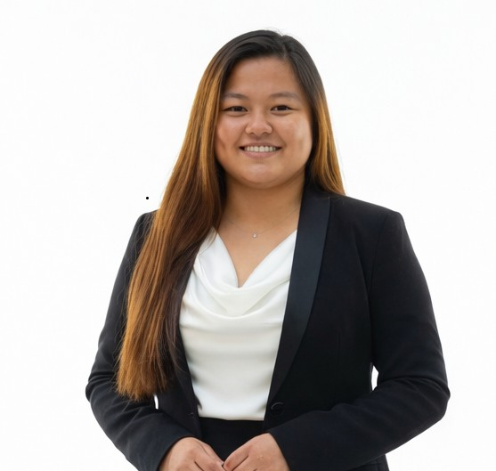

I am a Business Administration graduate majoring in Marketing Management with 2 years of experience in the recruitment industry, processing Filipino workers for overseas employment. I have strong experience in candidate sourcing, screening, and coordination.